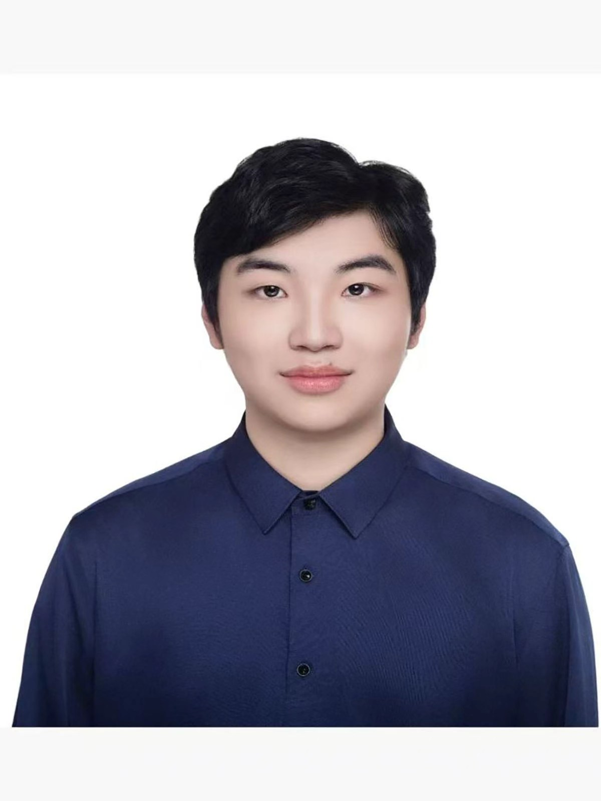

Student interested in Large Language Models, Reasoning, and AI Safety.
I am interested in understanding and improving the reasoning and safety capabilities of large language models. My current interests include reasoning, reinforcement learning, and alignment.
Email · GitHub · Google Scholar · CV
Master of Science in Computer Science
NUS
2026 – Present
Bachelor of Science in Computer Science
HKUST
2022 – 2026
Software Development Intern
Lively Impact Technology Limited, HKSTP (Hong Kong Science Park)
Jul 2025 – Dec 2025
LLM Reasoning
Investigating how pretrained language models acquire and express
reasoning capabilities.
AI Safety
Exploring methods for improving the reliability and safety of
language model reasoning.
Email: lihaoming@u.nus.edu Phone Number: +86 13424234661 / +65 87621960